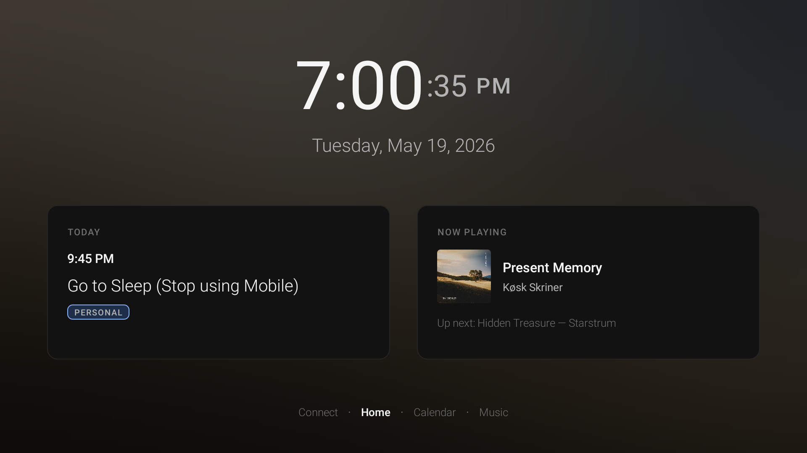
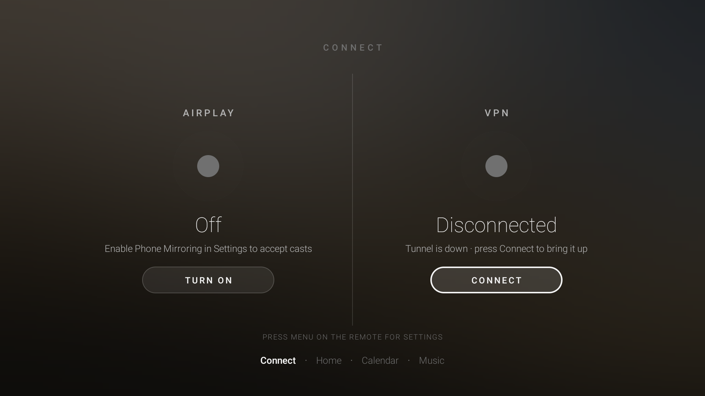
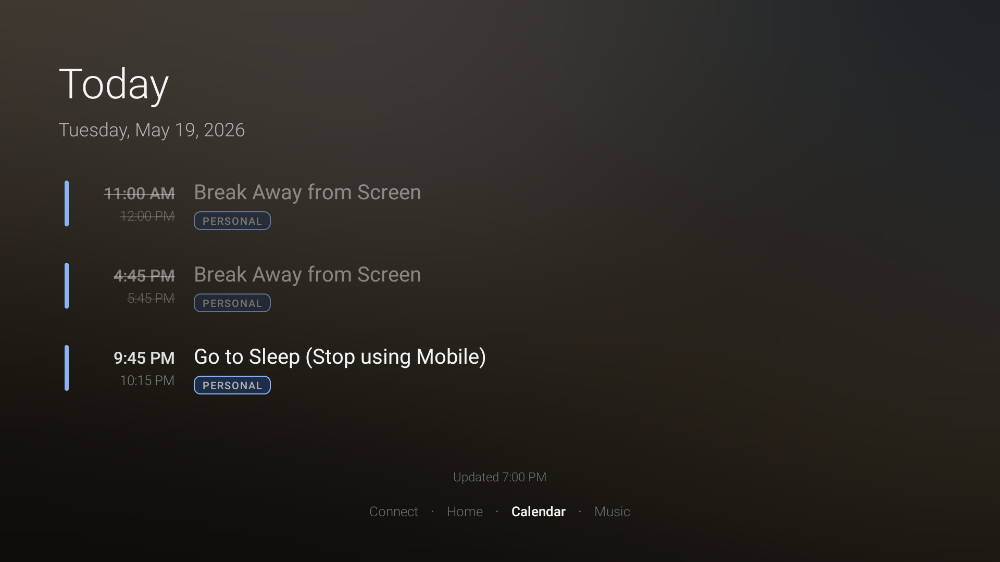
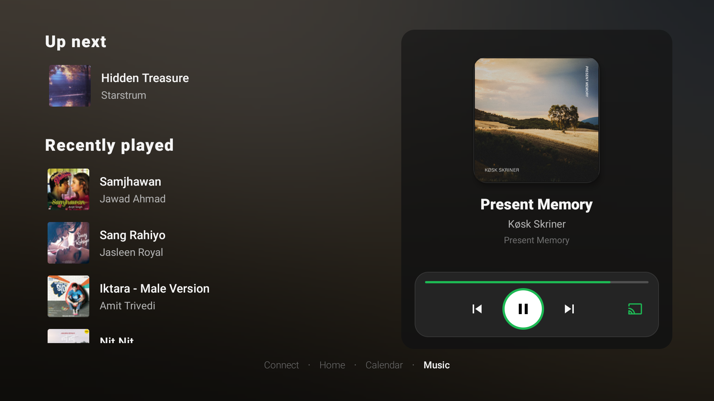
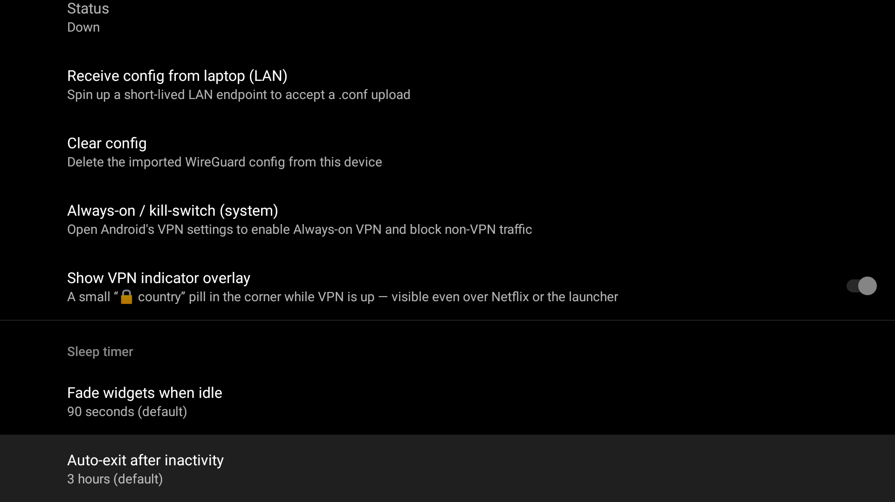

A clock you want to look at
Huge, thin, beautifully kerned time. Seconds fade after 90s of stillness. Drifts a few pixels every minute so your panel never burns in.
Plug a Fire TV into a spare monitor and turn that dusty second screen into the calmest, most useful surface in your setup. No cloud. No telemetry. No account required.
Features
Huge, thin, beautifully kerned time. Seconds fade after 90s of stillness. Drifts a few pixels every minute so your panel never burns in.
Walk past the screen, know whether to keep coding or stand up. Personal + work iCal feeds merged on one page.
Album art, transport, live queue, recently played. Switch playback between your devices from one focus ring.
AirPlay, Google Cast, Miracast — all three. Each independently toggleable. The dashboard crossfades out when a sender connects.
Drop a .conf from your laptop over LAN.
Every byte the TV sends — Netflix, Plex, the launcher — through the tunnel.
Every screen carries a softly blurred wash of the current track's artwork. Stop touching the remote and it fades to black.
Screenshots





Install
From the latest release. Pick the build for your platform.
app-firetv-release-vX.Y.Z.apk
app-googletv-release-vX.Y.Z.apkEnable ADB on the TV (Settings → My Fire TV → Developer Options).
adb connect <fire-tv-ip>:5555
adb install -r app-firetv-release-*.apkOpen Dock. Press Menu, paste your iCal URL, optionally connect Spotify. Done.
Building from source? See the README.
Why this exists
You already have a laptop for the thing you're focused on. You already have a phone for the world reaching in. You're missing the third screen — the one that just sits there and tells you the time, what meeting is next, and what's playing, without ever asking for a click.
Most "TV dashboards" are repurposed weather apps, photo frames, or a home-assistant panel from 2019. None of them sit gracefully in an engineer's workspace.
This one does.